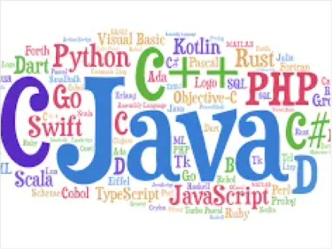
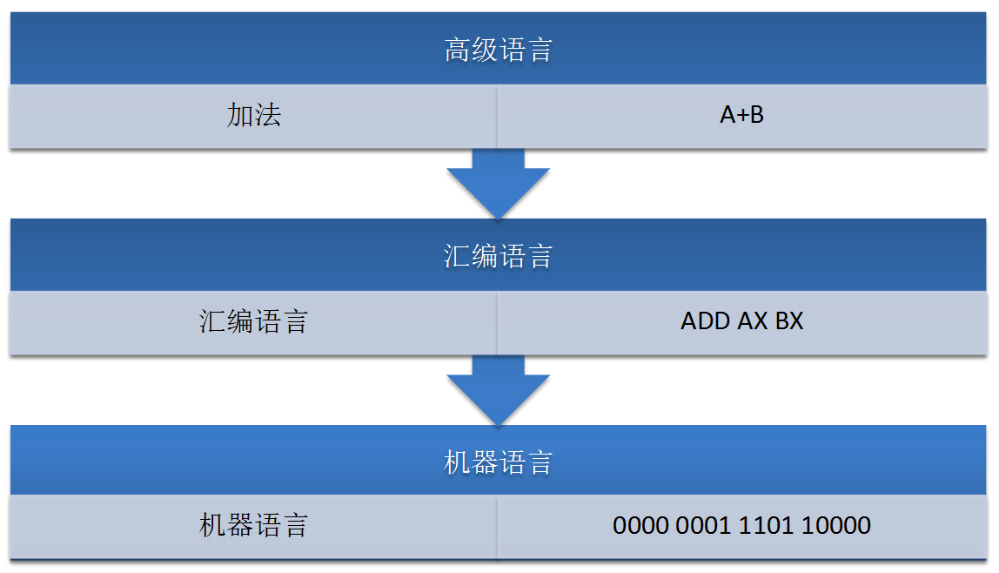

<!DOCTYPE lake>
<h1 data-lake-id="OoQGB" id="OoQGB"><span data-lake-id="u7750cdbe" id="u7750cdbe">C语言是什么</span></h1><p data-lake-id="ub4fec010" id="ub4fec010" style="text-align: center"></p><p data-lake-id="u0cf1a640" id="u0cf1a640"><strong><span data-lake-id="ube1254ff" id="ube1254ff">C语言</span></strong><span data-lake-id="ua2e2be66" id="ua2e2be66">是计算机编程语言的一种，编程语言用于</span><span data-lake-id="uf4de01ed" id="uf4de01ed" style="color: rgb(255,0,0)">人和机器交流。</span></p><p data-lake-id="u707798b2" id="u707798b2"><span data-lake-id="u740955da" id="u740955da">​</span><br/></p><p data-lake-id="ud7319c4b" id="ud7319c4b"><span data-lake-id="u78fd3eaf" id="u78fd3eaf">编程语言通过一系列的语法和语义规则来描述计算机程序的行为和逻辑，程序员使用编程语言编写程序后，计算机可以将程序转化为二进制指令（即机器码），并由CPU执行，CPU会按照指令的顺序依次执行每个指令。</span></p><p data-lake-id="u1f4e134b" id="u1f4e134b"><span data-lake-id="ua4e66749" id="ua4e66749">​</span><br/></p><h1 data-lake-id="LWYzx" id="LWYzx"><span data-lake-id="u33b72cb0" id="u33b72cb0" style="color: rgb(0,0,0)">语言发展历程</span></h1><p data-lake-id="udb17ff75" id="udb17ff75" style="text-align: center"></p><p data-lake-id="u4a925687" id="u4a925687"><br/></p><ul list="u2d3897ea"><li data-lake-id="u97e8e9f1" fid="u9c88ec24" id="u97e8e9f1"><span data-lake-id="uc1dad8a6" id="uc1dad8a6">机器语言</span></li></ul><ul data-lake-indent="1" list="u2d3897ea"><li data-lake-id="u2bbe7e9c" fid="u9c88ec24" id="u2bbe7e9c"><span data-lake-id="u1a90a8d8" id="u1a90a8d8" style="color: rgb(0,0,0)">机器语言是一组由0和1系列组成的指令码，这些指令码，是CPU制作厂商规定出来的，然后发布出来，程序员必须遵守。</span></li></ul><ul list="u2d3897ea" start="2"><li data-lake-id="ub2154b76" fid="u9c88ec24" id="ub2154b76"><span data-lake-id="uef264ae6" id="uef264ae6">汇编语言</span></li></ul><ul data-lake-indent="1" list="u2d3897ea"><li data-lake-id="uacbff9dd" fid="u9c88ec24" id="uacbff9dd"><span data-lake-id="ucbb4113d" id="ucbb4113d" style="color: rgb(51, 51, 51)">汇编语言，用一些容易理解和记忆的缩写单词来代替一些特定的指令，汇编语言和机器自身的</span><span data-lake-id="u90e1dfa9" id="u90e1dfa9">编程环境</span><span data-lake-id="u2c463509" id="u2c463509" style="color: rgb(51, 51, 51)">息息相关，推广和移植很难。</span></li></ul><ul list="u2d3897ea" start="3"><li data-lake-id="u92ceb9f7" fid="u9c88ec24" id="u92ceb9f7"><span data-lake-id="uad6d4e2d" id="uad6d4e2d" style="color: rgb(51, 51, 51)">高级语言</span></li></ul><ul data-lake-indent="1" list="u2d3897ea"><li data-lake-id="u84a6593d" fid="u9c88ec24" id="u84a6593d"><span data-lake-id="uf1252d5a" id="uf1252d5a" style="color: #000000">高级语言摆脱了计算机硬件的限制，把主要精力放在了程序设计上，不在关注底层的计算机硬件。</span></li><li data-lake-id="u87ae756d" fid="u9c88ec24" id="u87ae756d"><span data-lake-id="ufaec35ce" id="ufaec35ce">高级语言要被计算机执行，也需要一个翻译程序将其翻译成机器语言，而翻译工作由编译器或解释器完成。</span></li></ul><ul data-lake-indent="2" list="u2d3897ea"><li data-lake-id="u4a6b5ba1" fid="u9c88ec24" id="u4a6b5ba1"><span data-lake-id="u0e32fa71" id="u0e32fa71">C语言通过编译器翻译成机器语言</span></li></ul><p data-lake-id="u5730f505" id="u5730f505"><span class="lake-fontsize-12" data-lake-id="u3bd62cce" id="u3bd62cce">​</span><br/></p><h1 data-lake-id="W43CT" id="W43CT"><span data-lake-id="uea1f4073" id="uea1f4073" style="color: rgb(0,0,0)">为什么学习C语言</span></h1><h2 data-lake-id="p1zNU" id="p1zNU"><span data-lake-id="u5d5f92ca" id="u5d5f92ca">C语言特点</span></h2><ul list="u66c50039"><li data-lake-id="u863bcf99" fid="uc0c6665a" id="u863bcf99" style="text-align: left"><span data-lake-id="u0dcb70c2" id="u0dcb70c2">简洁</span></li></ul><ul data-lake-indent="1" list="u66c50039"><li data-lake-id="uffa016a4" fid="uc0c6665a" id="uffa016a4" style="text-align: left"><span data-lake-id="u36e0f1e2" id="u36e0f1e2">C语言的语法简单，语句清晰明了，使得程序易于阅读和理解。</span></li></ul><ul list="u66c50039" start="2"><li data-lake-id="ue710ca02" fid="uc0c6665a" id="ue710ca02" style="text-align: left"><span data-lake-id="uc5269f16" id="uc5269f16">高效</span></li></ul><ul data-lake-indent="1" list="u66c50039"><li data-lake-id="u8c79a577" fid="uc0c6665a" id="u8c79a577" style="text-align: left"><span data-lake-id="u29dfe277" id="u29dfe277">C语言的执行效率高，可以用于开发需要高性能的应用程序。</span></li></ul><ul list="u66c50039" start="3"><li data-lake-id="u81d504d2" fid="uc0c6665a" id="u81d504d2" style="text-align: left"><span data-lake-id="uae5c6d6e" id="uae5c6d6e">可移植</span></li></ul><ul data-lake-indent="1" list="u66c50039"><li data-lake-id="ud9a8661b" fid="uc0c6665a" id="ud9a8661b" style="text-align: left"><span data-lake-id="ueaf7e055" id="ueaf7e055">C语言可以在不同的硬件平台和操作系统上运行，具有较高的可移植性。</span></li></ul><ul list="u66c50039" start="4"><li data-lake-id="u110815b8" fid="uc0c6665a" id="u110815b8" style="text-align: left"><span data-lake-id="u5a142459" id="u5a142459">模块化</span></li></ul><ul data-lake-indent="1" list="u66c50039"><li data-lake-id="u5d5faed8" fid="uc0c6665a" id="u5d5faed8" style="text-align: left"><span data-lake-id="u173bb021" id="u173bb021">C语言支持函数和结构体等模块化编程方法，使得程序的复杂性得到有效控制。</span></li></ul><ul list="u66c50039" start="5"><li data-lake-id="uf5fa005b" fid="uc0c6665a" id="uf5fa005b" style="text-align: left"><span data-lake-id="u158909a2" id="u158909a2">标准化</span></li></ul><ul data-lake-indent="1" list="u66c50039"><li data-lake-id="u810835df" fid="uc0c6665a" id="u810835df" style="text-align: left"><span data-lake-id="ud065fcf0" id="ud065fcf0">C语言的语法和标准库已经被ISO和ANSI标准化，具有广泛的应用和兼容性。</span></li></ul><p data-lake-id="uc8ccc15f" id="uc8ccc15f" style="text-align: left"><span data-lake-id="u659d18be" id="u659d18be">​</span><br/></p><h2 data-lake-id="ob7Xx" id="ob7Xx"><span data-lake-id="ucdd97ae4" id="ucdd97ae4">C语言应用领域</span></h2><ul list="u5c920b4d"><li data-lake-id="ue8926b3e" fid="u6e54cb51" id="ue8926b3e" style="text-align: left"><span data-lake-id="ue460dc68" id="ue460dc68">系统软件</span></li></ul><ul data-lake-indent="1" list="u5c920b4d"><li data-lake-id="u46a03950" fid="u6e54cb51" id="u46a03950" style="text-align: left"><span data-lake-id="u9ee53429" id="u9ee53429">操作系统、编译器、数据库等</span></li></ul><ul list="u5c920b4d" start="2"><li data-lake-id="u78952b26" fid="u6e54cb51" id="u78952b26" style="text-align: left"><span data-lake-id="uec61bb44" id="uec61bb44">嵌入式系统</span></li></ul><ul data-lake-indent="1" list="u5c920b4d"><li data-lake-id="ue92b0a6e" fid="u6e54cb51" id="ue92b0a6e" style="text-align: left"><span data-lake-id="uf6bc3195" id="uf6bc3195">智能家电、智能穿戴设备、智能汽车等</span></li></ul><ul list="u5c920b4d" start="3"><li data-lake-id="ud63754e8" fid="u6e54cb51" id="ud63754e8" style="text-align: left"><span data-lake-id="u156d4359" id="u156d4359">网络设备</span></li></ul><ul data-lake-indent="1" list="u5c920b4d"><li data-lake-id="udb86b2a7" fid="u6e54cb51" id="udb86b2a7" style="text-align: left"><span data-lake-id="u5d7c9284" id="u5d7c9284">路由器、交换机、防火墙等</span></li></ul><ul list="u5c920b4d" start="4"><li data-lake-id="ub9b5850f" fid="u6e54cb51" id="ub9b5850f" style="text-align: left"><span data-lake-id="u2dd2c9f9" id="u2dd2c9f9">游戏开发</span></li></ul><ul data-lake-indent="1" list="u5c920b4d"><li data-lake-id="u7247fd04" fid="u6e54cb51" id="u7247fd04" style="text-align: left"><span data-lake-id="u98833d78" id="u98833d78">电脑游戏、手机游戏等</span></li></ul><p data-lake-id="u3faabe40" id="u3faabe40" style="text-align: left"><span data-lake-id="u587fe560" id="u587fe560">​</span><br/></p><h1 data-lake-id="QZ1gZ" id="QZ1gZ"><span data-lake-id="ub6b6ee80" id="ub6b6ee80">C语言的标准</span></h1><ul list="u6c3d37c7"><li data-lake-id="ue2e0ecfe" fid="u1d5369d6" id="ue2e0ecfe" style="text-align: left"><span data-lake-id="uf183c3cb" id="uf183c3cb">C89(C90)标准</span></li></ul><ul data-lake-indent="1" list="u6c3d37c7"><li data-lake-id="u77a3c870" fid="u1d5369d6" id="u77a3c870" style="text-align: left"><span data-lake-id="u06959f9c" id="u06959f9c">1989年，美国国家标准协会通过了C语言标准，简称C89</span></li><li data-lake-id="u93fea4ba" fid="u1d5369d6" id="u93fea4ba" style="text-align: left"><span data-lake-id="uce58d07c" id="uce58d07c">1990年，国际标准化组织接收并采纳C89作为国际标准</span></li></ul><ul list="u6c3d37c7" start="2"><li data-lake-id="u40b26f90" fid="u1d5369d6" id="u40b26f90" style="text-align: left"><span data-lake-id="ua1923d8e" id="ua1923d8e">C99标准</span></li></ul><ul data-lake-indent="1" list="u6c3d37c7"><li data-lake-id="ub3ce60b3" fid="u1d5369d6" id="ub3ce60b3" style="text-align: left"><span data-lake-id="u444ee35b" id="u444ee35b">1999年，国际标准化组织和国际电工委员会正式发布了ISO/IEC 9899:1999，简称C99</span></li><li data-lake-id="u666b6c74" fid="u1d5369d6" id="u666b6c74" style="text-align: left"><span data-lake-id="u70e90120" id="u70e90120">C99引入了许多新特性，例如内联函数，变量声明可以不放在函数开头，支持变长数组</span></li></ul><ul list="u6c3d37c7" start="3"><li data-lake-id="u64da4f2a" fid="u1d5369d6" id="u64da4f2a" style="text-align: left"><span data-lake-id="uffd5cc37" id="uffd5cc37">C11标准</span></li></ul><ul data-lake-indent="1" list="u6c3d37c7"><li data-lake-id="u396cc76c" fid="u1d5369d6" id="u396cc76c" style="text-align: left"><span data-lake-id="u29ed132e" id="u29ed132e">2011年，国际标准化组织和国际电工委员会正式发布C语言标准第三版草案N1570，称为ISO/IEC 9899:2011，简称C11</span></li><li data-lake-id="u9638ca0c" fid="u1d5369d6" id="u9638ca0c" style="text-align: left"><span data-lake-id="u8c135ad4" id="u8c135ad4">C11增强了C语言对C++的兼容性</span></li></ul>